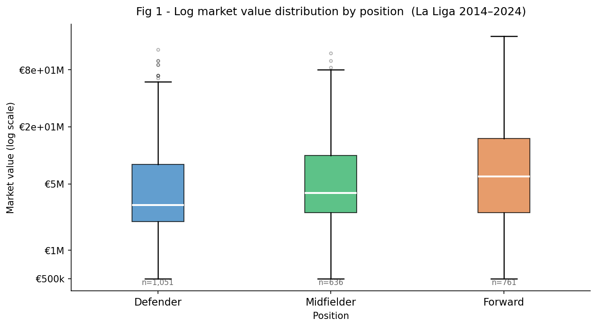
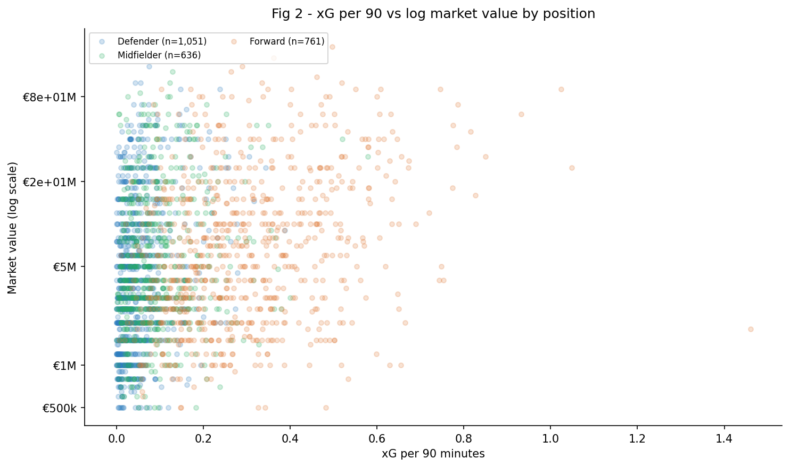
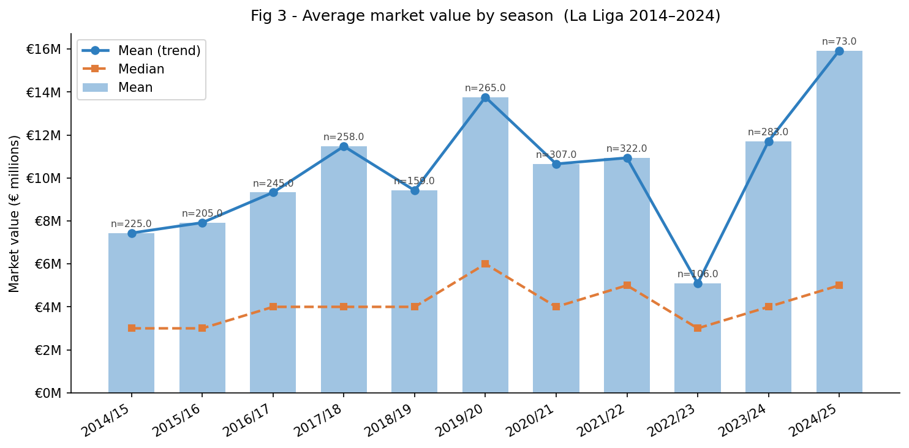
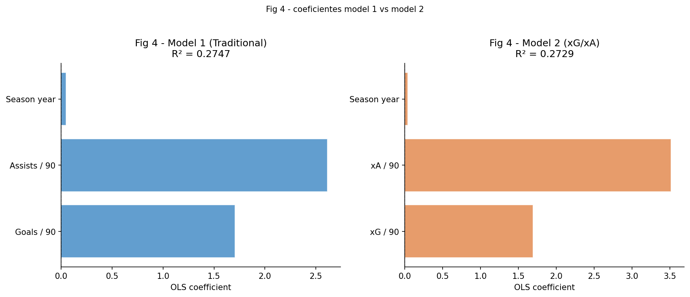

Does the Football Transfer Market Reward Performance or Potential?
Using data from 2,679 player-seasons across eleven La Liga seasons, I built four OLS regression models to test whether the transfer market rewards underlying performance or just results. The most surprising finding had nothing to do with xG.

1. Introduction
Football transfers are one of the most talked about topics in modern sport. Every summer, clubs spend hundreds of millions of euros on players. But what exactly are they paying for? Are they paying for what a player has already done, or for what he might do in the future?
Watching La Liga, I kept noticing a gap between how dangerous certain players looked and how many goals they actually scored. Isaac Romero at Sevilla in 2023/24 is a good example. His expected goals per 90 minutes was 0.774, which is elite level, but he only converted at 0.334 goals per 90. Someone looking only at the goal tally might question his €18 million valuation. But his xG suggested the chances were real, even if the finishing was not. The market seemed to see something the raw numbers did not show. That is what got me thinking about this project.
I wanted to know whether on-pitch performance actually predicts market value in La Liga, and more specifically, whether the market rewards underlying performance quality measured by expected goals (xG) or just results. Expected goals assigns a probability between 0 and 1 to each shot based on things like distance, angle, and assist type. A shot worth 0.3 xG means a typical player would score it 30% of the time. So xG per 90 minutes measures how many goals a player should be scoring based on chance quality, not just whether he converts them.
In my first project I used shots on target as a rough proxy for xG because that dataset did not include expected goals data. This project uses xG directly, which made it possible to properly test the question. Using data scraped from understat.com and market valuations from Transfermarkt covering 2,679 player-seasons across eleven La Liga seasons from 2014 to 2024, I built four OLS regression models with log-transformed market value as the outcome. The analysis looks at two things: does xG predict market value better than raw goals, and which performance metrics matter most for player valuation in La Liga? The answer to the first question turned out to be more nuanced than I expected. And the most unexpected result was not directly related to xG.
2. Data
I used two data sources for this project: understat.com for on-pitch performance metrics, and Transfermarkt for market valuations. The performance data was scraped directly from understat.com using Python's requests and json libraries. Understat tracks every shot in La Liga and assigns each one an xG value based on shot location, angle, and assist type. I collected player-level statistics for all eleven seasons from 2014/15 to 2024/25. The resulting dataset has 6,192 player-season observations with variables including xG, expected assists (xA), goals, assists, shots, key passes, minutes played, and position.
For market valuations I used a publicly available Transfermarkt dataset on Kaggle (davidcariboo/player-scores). I downloaded three files from it: one with historical market value snapshots, one with player attributes including date of birth, and one with competition codes to filter down to La Liga. For each player and season I kept only the last recorded valuation of that year.
Merging the two datasets meant matching player names across sources. Names are sometimes spelled differently because of accents or abbreviations, so I standardised everything to lowercase and checked the cases that did not line up. The fact that 97% matched exactly made the merge much cleaner than I anticipated.
After merging I applied three filters. Players with market values below €500,000 were removed because those valuations tend to be symbolic entries for fringe squad players. Players with fewer than 450 minutes played were excluded because per-90 metrics get unreliable with very little playing time. I tried a lower threshold first and the per-90 rates for some players were so extreme they were clearly not meaningful. Goalkeepers were removed entirely since xG and xA do not capture what they do.
For each player I calculated age as season year minus birth year, and built per-90 versions of the main stats by dividing each cumulative figure by minutes played divided by 90. That way a player who scored 7 goals in 1,500 minutes is comparable to one who scored 10 in 3,000. The outcome variable in all models is the log of market value. Market values in La Liga range from €500,000 to €200,000,000. That is a 400 times difference, and without any transformation a handful of superstar valuations would dominate any linear model. Taking the log compresses the scale so that doubling in value always represents the same change, whether you are going from €1M to €2M or from €50M to €100M. I also created indicator variables for position (one for Forwards and one for Midfielders) so the model could account for the fact that position affects market value independently of performance. Defenders are the baseline, so the coefficients on the other two positions show how much more or less they tend to be valued at the same performance level. After all the filters, I ended up with 2,679 player-season observations and no missing values in any of the variables I needed for the models.
3. Methodology
I used Ordinary Least Squares (OLS) regression to estimate the relationship between player performance and market value. I chose OLS for the same reason as in my first project, as it is easy to interpret. Each coefficient tells me directly how much log market value changes when that variable goes up by one unit, holding everything else constant.
My starting idea was simple: build one model and see how well performance predicts market value. But fairly quickly I realised the more interesting question was whether xG predicts it better than actual goals. To test that properly I needed to compare two versions of the model side by side, which led me to build four models progressively, adding variable groups one at a time.
Model 1 uses only traditional metrics: goals per 90, assists per 90, minutes played, position indicators, and season year. This is roughly how a scout might have evaluated players before advanced metrics became common. Model 2 swaps goals and assists for their expected equivalents: xG per 90 and xA per 90. Everything else stays the same. If Model 2 fits better than Model 1, it means the market rewards underlying performance quality over raw results. At that point I was curious what would happen if I just put everything in together. Model 3 puts both sets of metrics in together. The objective of this step was to examine what happened when both were in the same model at once. Model 3 was fine but something felt missing. When I plotted the residuals I kept noticing that age-related patterns were showing up, which is what pushed me toward Model 4. Model 4 adds player age and age squared. I did not plan to include age originally, but when I plotted market value against age the relationship was clearly not a straight line. Values peaked somewhere in the early twenties and then dropped off. I added the squared term because I did not want to force a straight line through something that was obviously curved.
Season year is included in all models as a control for the general rise in transfer market values over time.
All results should be interpreted as associations rather than causal relationships, since the model does not establish causation.
4. Results
Exploratory Analysis
Before running the models I spent some time exploring the data visually. Log market value is roughly normally distributed across all three positions, with Forwards and Midfielders sitting slightly higher than Defenders on average.

The scatter plot of xG per 90 against log market value shows a clear upward trend across all positions, which suggested even before any modelling that xG carries real information about player value.

Average market values in La Liga grew a lot over the sample period, from roughly €4M per player in 2014/15 to over €12M in 2022/23, before dipping slightly in recent seasons. That trend is why season year needs to be in the model as a control.

Regression Results
Models 1 and 2 have almost identical fit: R² = 0.268 for traditional metrics and R² = 0.266 for modern metrics. That surprised me. I thought xG would more clearly outperform raw goals as a predictor of market value. Instead, the transfer market prices goals and xG almost equally. The results suggest that the market may not have fully made that shift yet, at least not clearly. A player who scores is valued about the same as a player who generates equivalent xG without converting.
When I put both sets of metrics in the same model at once, the results got harder to read. Goals and xG move together so closely across the dataset that the model struggles to tell them apart. Model 3 has a slightly higher R² of 0.278, but I would not read too much into the individual coefficients. I noticed the same thing in Project 1, where HomeCorners lost significance once shots on target were in the model.
Model 4 is the strongest model with R² = 0.406. Adding age and age squared increased explanatory power by almost 13 percentage points over Model 3. That jump was larger than I expected. The model suggests market value rises with age up to a point and then starts falling, which is exactly the shape you would expect if the market is paying for potential.
The result I did not expect at all was the peak age. I assumed established stars in their mid-twenties would be the most valuable. The market values teenagers and players just entering their twenties the most. It is paying for potential, not just current form. Lamine Yamal entered La Liga at 16 with a market value already above €100 million, which is an extreme version of that idea.
The biggest surprise in Model 4 was xA per 90, which had the largest coefficient of any performance metric at 2.57, ahead of goals per 90 at 1.29 and assists per 90 at 1.08. Creative players who generate chances for others appear to be valued more highly than pure finishers within this dataset, at least in La Liga, even when their own goals and assists are already in the model.

Season year comes out positive in all four models, which makes sense given how much transfer fees have risen over the decade. The Forward dummy is negative and significant in Models 2, 3, and 4, which I found counterintuitive. It may reflect the depth of forward talent in La Liga making it harder for forwards to stand out, but I am not certain of the explanation.
5. Limitations and Future Work
The model explains about 40% of the variance in market values, so 60% is unexplained. Honestly I expected that number to be higher before I ran it. Market value depends on things this dataset simply does not have: injury history, contract length, and media profile among others. A player's value is not just about what he does on the pitch.
Matching players across two different sources by name is not perfect. Some may have been missed, especially players with common names or unusual spellings. Transfermarkt valuations are estimates made by the Transfermarkt community, not actual transfer fees. A player valued at €20M might sell for €15M or €30M depending on how negotiations go. They are widely used as a proxy in football analytics but they are still subjective.
Goalkeepers were excluded entirely, so everything here applies only to outfield players.
A few extensions would make this more complete. Adding contract length and injury history would probably push R² well above 0.40, since those are two of the most obvious missing variables. It would also be interesting to test whether the xG coefficient has grown relative to the goals coefficient over time. xG went from a niche metric in 2014 to something discussed on mainstream television by 2024. If the market has learned to use it, the relative importance of xG should have increased. Applying the same approach to other leagues like the Premier League or Bundesliga would show whether the same pattern shows up elsewhere. Finally, the undervalued players flagged by the model raise an obvious question: did their values correct upward in later seasons, or did they stay undervalued? That would be a straightforward follow-up using the same dataset.
6. Conclusion
This project started with two questions: which performance metrics best predict player market value in La Liga, and does the market reward underlying performance quality or just results? On the first question, expected assists per 90 is the strongest individual predictor, followed by goals per 90 and assists per 90. Creative players who set up chances for teammates seem to be valued more highly than pure finishers, even when their own goals and assists are already in the model. Playing time and season year both matter consistently across all models.
On the second question, the answer is not straightforward. Models 1 and 2 have nearly identical R² values: 0.268 for traditional metrics and 0.266 for xG and xA. The market prices goals and xG about the same. It has not clearly moved toward rewarding underlying quality over results. Isaac Romero at Sevilla in 2023/24 shows the tension well. His xG per 90 was 0.774, suggesting elite chance quality, and the market valued him at €18 million despite a modest goal tally. But if that underlying quality does not eventually turn into consistent performances, the valuation adjusts downward. The market believes in xG, but only up to a point.
The result I did not expect at all was the peak age. I assumed established stars in their mid-twenties would command the highest values. The data showed the opposite. The market puts maximum value on teenagers and players just entering their twenties. It is paying for potential, not just current form. Alexander Isak is a good example from the dataset. When he joined Real Sociedad in 2019/20 at age 20, his xG per 90 was 0.510 and his market value was €8 million. That was a bet, not a guarantee. Over the next seasons he showed he could actually perform at that level consistently, which is what turned him from a promising signing into an attractive option for a bigger club. By the time Newcastle paid €50 million for him, the market had caught up to what the numbers were already showing three years earlier.
Adding age to the model raised R² from 0.278 to 0.406, a jump of nearly 13 percentage points. Performance metrics alone explain about 27% of the variance in market value. Age adds another 13%. The remaining 60% is everything the model cannot see: injuries, contracts, media profile, and the fact that valuations are ultimately human judgements.
This project builds directly on the first one. In the Premier League analysis I used shots on target as a proxy for xG because xG was not available. Here xG is measured directly, and the finding is that it predicts market value about as well as actual goals do. The market has not fully made the shift toward rewarding quality over results. I do not know yet whether that shift is visible in the data. Testing it would be the next step.
Performance data scraped from understat.com using Python's requests and json libraries. Understat provides player-level expected goals statistics for La Liga and other major European leagues.
Cariboo, D. (2024). Football Data from Transfermarkt. Kaggle. CC0 Public Domain. (davidcariboo/player-scores)
All analysis done in Python. Main libraries: pandas for data handling, statsmodels for OLS regression, matplotlib for charts.